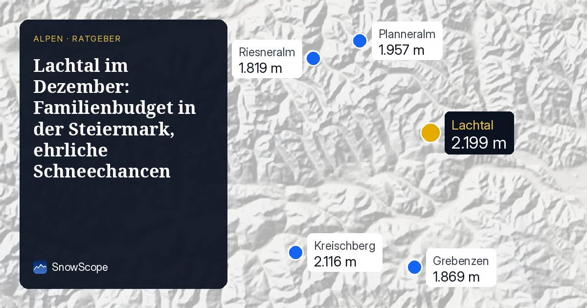
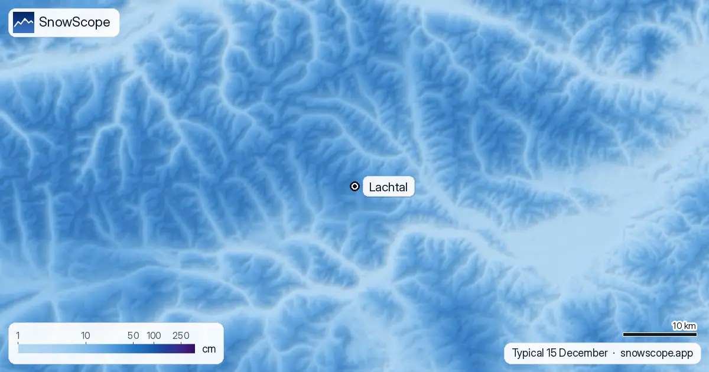

Lachtal im Dezember: Familienbudget in der Steiermark, ehrliche Schneechancen
Lachtal verlangt in der Saison 2026-27 EUR 62 für einen Erwachsenen-Tageskarte und kleine Kinder fahren gratis. Das Skigebiet liegt zwischen 1572 und 2199 m in der Steiermark und bietet 25 km Pisten sowie 10 Liftanlagen, die auf Familien ausgerichtet sind. Im Dezember steigen die Schneechancen mit jedem Tag: In der Mittelbahn (1885 m) hat die zweite Dezemberhälfte in etwa sieben von zehn Wintern unserer Aufzeichnungen 30 cm oder mehr.
Die Live-Schneeprognose für Lachtal in der SnowScope-AppSchneehöhen, Pulverschnee-Alarme und 3D-Karte, gratis.
Was der Dezember kostet und worauf du verzichten kannst
Eine Erwachsenen-Tageskarte kostet EUR 62; ein 6-Tage-Frühjahrsticket EUR 293,50. Die größere Ersparnis kommt, wenn du Kinder hast: Laut Preisliste fahren alle Kinder, die 2021 oder später geboren sind (jetzt 5 oder 6 Jahre alt), gratis. Für eine Familie mit zwei Erwachsenen und einem kleinen Kind wird eine ganze Woche viel günstiger als an größeren Skigebieten.
Das Gelände ist kompakt: kleine Liftanlagen, kurze Pisten, überwiegend Anfänger- und Mittelstufen-Abfahrten. Das passt zu Familien, die zusammen bleiben und sich lange Warteschlangen sparen möchten.


Schneehöhen, auf die du in jeder Höhenlage rechnen kannst
Lachtal liegt hoch für diese Ecke Österreichs. Am typischen 15. Dezember zeigt SnowScope 30 cm in der Talstation (1572 m), 46 cm in der Mittelbahn (1885 m) und 58 cm am Gipfel (2199 m). Über alle 46 Winter unserer Aufzeichnungen hat es in der Talstation am 15. Dezember nie grüne Pisten gegeben.
Der Dezember-Rhythmus ist wichtiger, als du denkst. In den Wochen 1–7 und 8–14 haben nur 54 % und 63 % der Winter 30 cm oder mehr in der Mittelbahn. Ab Woche 15–21 springt dieser Anteil auf 72 %. Die Weihnachtswoche (22.–28. Dezember) erreicht 78 %. Wenn du die richtigen Daten wählst, hast du viel bessere Chancen auf guten Untergrund.
Wie sich die letzten 15 Winter das Bild verändert haben
Lacthals Dezember ist dünner geworden. Die durchschnittliche Schneehöhe in der Mittelbahn ist von 57 cm in den ersten 15 Wintern unserer Aufzeichnungen auf 33 cm in den letzten 15 Wintern (2011–12 bis 2025–26) gesunken. In der Talstation sank der Anteil der Weihnachtswochen mit 30 cm von 80 % auf 40 %.
Der letzte Winter (2025–26) unterstrichen das Risiko: Die Mittelbahn hatte am 15. Dezember nur 9 cm und am 24. Dezember 7 cm. Das war dünn genug, um sorgfältige Pistenpflege zu erfordern, und viele Abfahrten waren schneeartig. Wenn du eine feste Dezemberwoche buchst, setzt du eher auf die Vorhersage als auf die Geschichte.
Wann du buchen solltest und wann flexibel bleiben
Die erste Dezemberwoche ist hier ein Glücksspiel: Nur die Hälfte unserer Winter hat dann 30 cm in der Mittelbahn. Die Woche vor Weihnachten und die Weihnachtswoche sind sicherere Wetten mit 72 % und 78 % Chancen auf gute Tiefe. Wenn du spät buchen und kostenlos stornieren kannst, tu das. Warte, bis die Vorhersage sich klärt, schau dir die Schneekarte am 1. oder 2. Dezember an und entscheide dann.
Wenn du Monate im Voraus buchen musst, peile den 15.–28. Dezember an. Wenn du früh im Dezember keine Wahl hast, habe einen Plan B: Entweder ein höheres Gebiet im Norden oder die Bereitschaft, auf dünnem Schnee auf gut präparierten Pisten zu fahren.
Turracher Höhe: in der Nähe, aber nicht besser für den Dezember
Südwestlich von Lachtal liegt die Turracher Höhe, ein weiteres kleines Skigebiet zwischen Steiermark und Kärnten. Es liegt tiefer und bekommt im Dezember weniger Schnee: Am typischen 15. Dezember hat es 23 cm in der Mittelbahn (1792 m), und nur 39 % der Winter haben 30 cm in den Dezembermitte-Wochen. Die Tageskarte kostet EUR 72,50 und das 6-Tage-Frühjahrsticket EUR 353, beides teurer als Lachtal.
Wenn du im Dezember einen Familientrip im Budget machen willst, ist Lachtal billiger und schneesicherer. Die Wahl liegt nicht zwischen diesen zwei kleinen Hügeln, sondern ob du überhaupt einen kleinen Berg in einem schneearmen Dezember buchen sollst oder lieber nördlich und höher fahren möchtest, wo die Chancen besser sind.
Tipps für Skifahrer
- Bring einen Altersnachweis für Kinder mit: Alle Kinder, die 2021 oder später geboren sind, fahren gratis. Das ist wichtiger als jeder Erwachsenen-Rabatt.
- Vermeide die erste Dezemberwoche, es sei denn, die Vorhersage ist ungewöhnlich gut. Buche stattdessen für 15.–28. Dezember, wenn 70 % der Winter guten Untergrund haben.
- Wenn du Wochen im Voraus buchen musst, wähle ein Paket, das du kostenlos stornieren kannst. Entscheide bis Anfang Dezember, wenn die Schneevorhersage klarer wird.
- Für Off-Piste oder Couloirs nach Neuschnee schau erst in das offizielle Lawinenlagebericht Steiermark auf lawinen.report.
- Wenn die Mittelbahn bis Anfang Dezember kahl aussieht, wechsel zu einem höheren Skigebiet, statt auf bessere Bedingungen zu hoffen.
Zu diesen Zahlen
Die Schneehöhen der Skigebiete sind der meiste Schnee in den oberen Hängen am angegebenen Tag; es sind Schätzungen für eine Fläche, keine Messung an einem Punkt. Prognosen können sich ändern. Lies vor dem Freeriden immer den offiziellen Lawinenlagebericht.
Offizielle Lawinenlageberichte: Lawinenwarndienst Steiermark
Diesen Bericht zitieren
Für Forschung, Lehre oder Presse: Zahlen und Grafiken sind unter CC BY 4.0 mit dieser Quellenangabe frei nutzbar.
SnowScope (2026), Lachtal im Dezember: Familienbudget in der Steiermark, ehrliche Schneechancen, https://snowscope.app/blog/de/2026/11/lachtal-december-ski-styria-budget-snow.html, abgerufen am 2026-11-14
SnowScope (Atlas Labs). (2026, November 14). Lachtal im Dezember: Familienbudget in der Steiermark, ehrliche Schneechancen. SnowScope snow reports. https://snowscope.app/blog/de/2026/11/lachtal-december-ski-styria-budget-snow.html
BibTeX
@misc{snowscope2026lachtaldecemberskistyria,
author = {{SnowScope (Atlas Labs)}},
title = {Lachtal im Dezember: Familienbudget in der Steiermark, ehrliche Schneechancen},
year = {2026},
month = nov,
howpublished = {\url{https://snowscope.app/blog/de/2026/11/lachtal-december-ski-styria-budget-snow.html}},
note = {Published 2026-11-14 17:24 UTC; accessed 2026-11-14}
}· CC BY 4.0 · Methoden, Daten und Werkzeuge →
Lachtal: Schnee und Temperatur nach Höhe, dieser Winter vs letzter (Werkzeuge) →
Lachtal folgen
Gratis: eine Nachricht, wenn Neuschnee kommt, und jeden Morgen die Vorhersage.
Weitere Schneeberichte

Schnee heute in Cortina, die europäische Saisonprognose für Dezember und unsere Chancen auf weiße Weihnachten in den östlichen Dolomiten.

Chamonix startet den Dezember mit 27 cm in der Höhe, aber dünne Schneedecke darunter. Wärme und Nässe drücken gegeneinander; erwarten Sie nahezu normalen Dezemberschnee. Daten vom 10. November 2026.